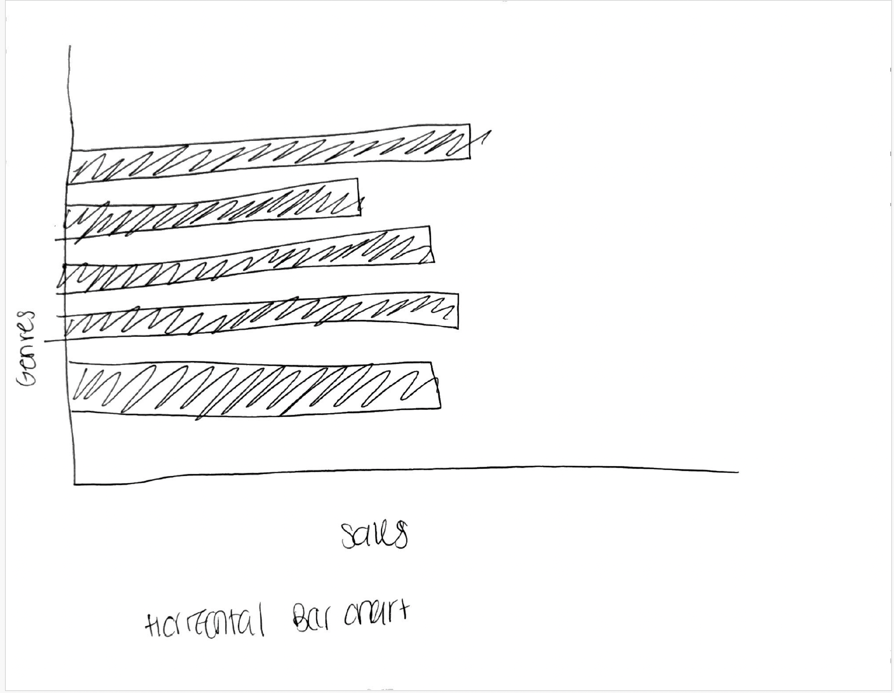
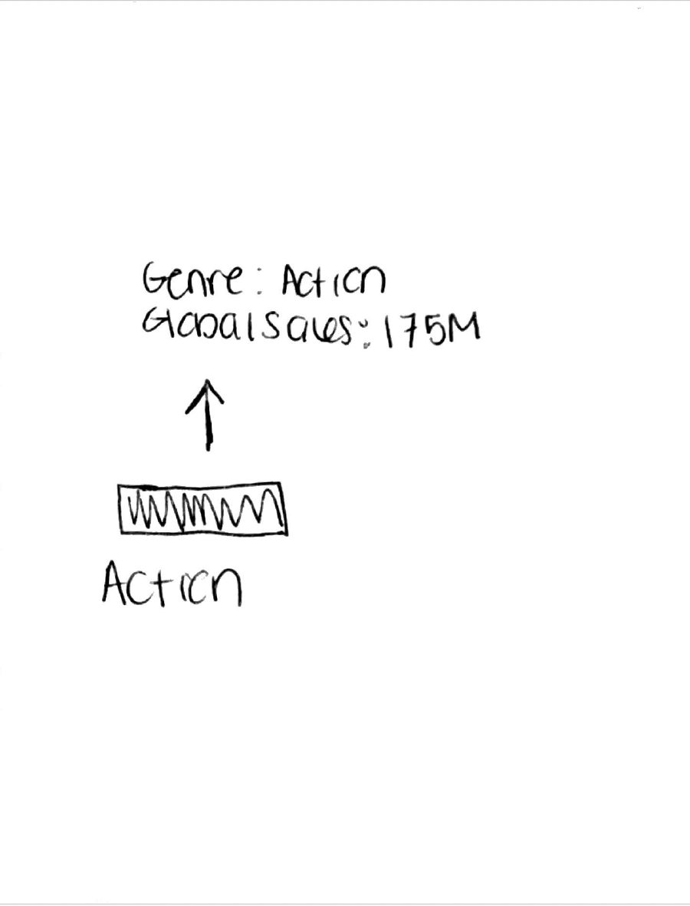

To start this project, I looked through the dataset and tried to figure out what question I wanted to answer. Since the dataset includes different video game genres and their sales, I decided to focus on which genres have the highest global sales. Before doing anything in D3, I sketched out a few ideas on paper just to get a feel for how the visualization might look.
My first sketch was a vertical bar chart. This was the idea I felt most drawn to from the beginning, because bar charts make it really easy to compare categories like genres. Each bar would represent a genre, and the height would show the total global sales.
Sketch 1: Vertical Bar Chart (Final Concept)

I also sketched out a horizontal bar chart as an alternative. I wanted to see if it would work better, especially since some genres have longer names. Horizontal bars can help with label readability, so I made a quick version to compare. Even though it was a good option, I still preferred the vertical layout.
Sketch 2: Horizontal Bar Chart (Alternative Layout)
The last sketch I made was focused on interaction. I knew I wanted tooltips so users could hover over each bar and see the exact sales values. This keeps the chart clean but still lets people get more details if they want them.
Sketch 3: Tooltip Interaction Concept
I chose a vertical bar chart because it’s the clearest way to compare categories like video game genres. Putting the genres on the x-axis and using the height of each bar to show total global sales makes the comparison really straightforward.
For color, I kept things simple. Since the focus of the visualization is the height of the bars, using one main color helps prevent distraction. Too many colors might make it seem like the colors mean something when they don’t, so keeping it clean felt like the best choice.
Tooltips were added because showing exact numbers on the bars would clutter the visualization and make it harder to read. This way the chart stays clean, but the user can still get precise values by hovering.
I also made sure the axes and labels were easy to read. The title explains exactly what the chart shows, and the layout has enough spacing so nothing feels crowded.